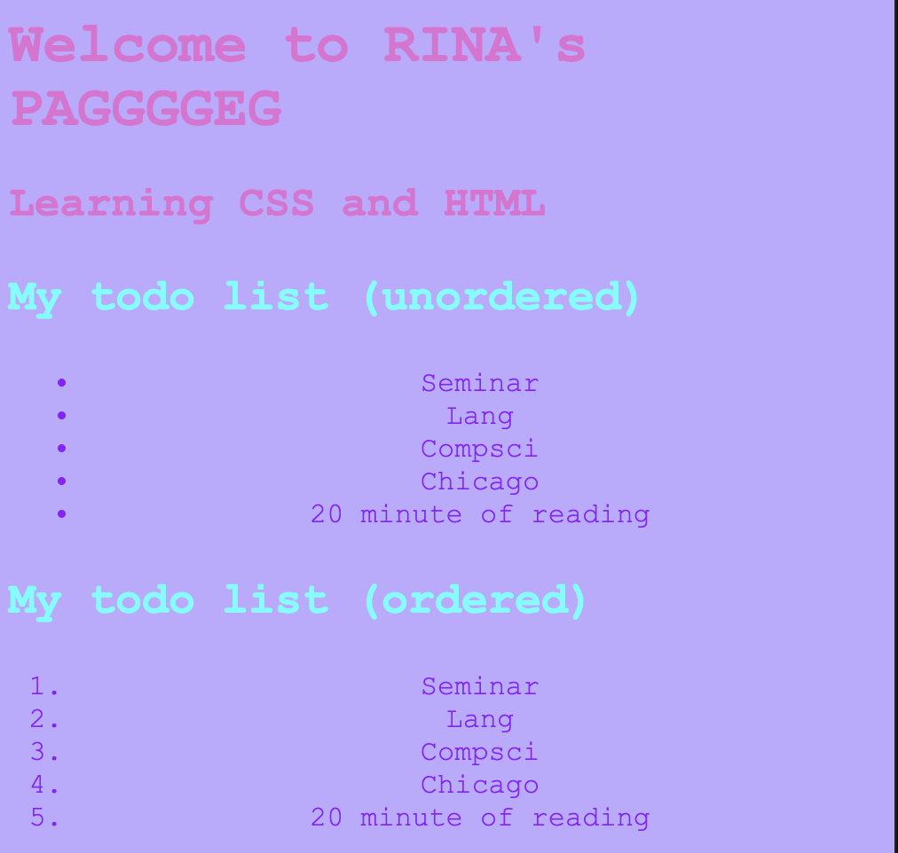
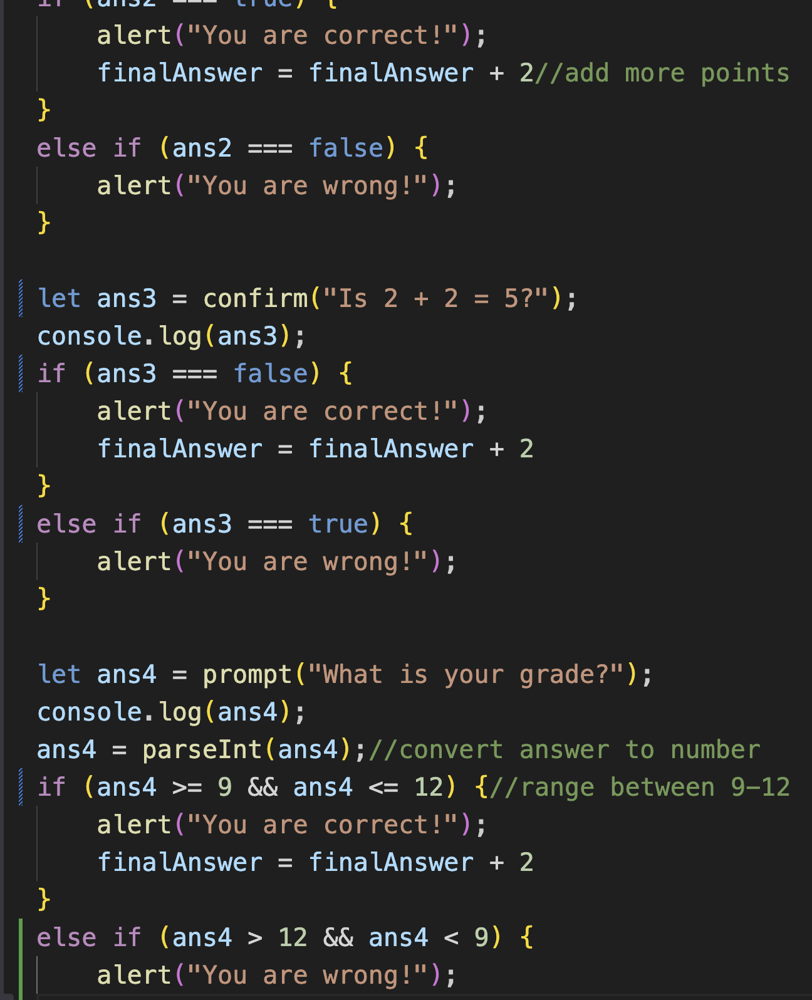

Overview
Unit 2 introduced the three core languages of the web: HTML for structure, CSS for style, and JavaScript for interactivity. The main deliverable was this portfolio website itself, built and iterated over several classes. I also completed a JavaScript quiz project that taught me conditionals and variables in JS.
Portfolio Website
The portfolio site started as a plain HTML template and grew into a styled, multi-page site with a custom font, animated navigation bar, photo gallery, embedded video, audio, and a custom colour scheme I designed myself. The biggest challenge was getting consistent styling across Safari and Chrome — Cursor helped me track down the browser-specific CSS differences. I also learned how to use position: sticky for the nav bar and @keyframes for the background fade animation.

Click the screenshot to open the Class 2 practice website, or browse my other practice pages below:
JavaScript Pop-Up Quiz
For this activity I built a multi-question quiz using JavaScript's three built-in popup types: alert() to display information, prompt() to collect a text answer, and confirm() for true/false questions. I used if / else if / else chains to check each answer and keep a running score, then displayed the final result at the end. The main thing I learned was how JavaScript variables work differently from Python — especially that let and const replace Python's simple assignment, and that browser JS runs entirely in the client without needing a terminal. I also used console.log() extensively to debug answers that weren't matching correctly.
Code snippet from the quiz:
